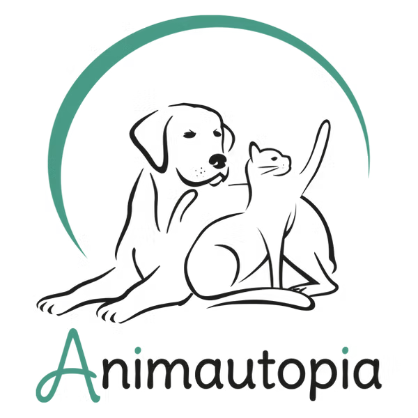

Être professionnel du comportement félin, c'est s'appuyer sur des bases solides issues d'une formation sérieuse.
Dans une profession encore non réglementée, les formations suivies sont un repère essentiel pour juger du sérieux d'un intervenant.
Et comme notre compréhension du chat évolue sans cesse, actualiser régulièrement ses connaissances permet de mieux accompagner l'animal et les humains qui partagent sa vie.
Formation initiale
Comportementaliste spécialiste du chat
 Animautopia - 2024- Ethologie animale et féline
- Répertoire comportemental du chat domestique
- Résolution des problématiques
- Communication et psychologie humaine
- Mémoire de fin de formation : "L'impact du sevrage précoce : Quels sont les effets du sevrage précoce sur le comportement des chats ?"
Formation initiale
ACACED
VOX Animae - 2024Attestation de Connaissances pour les Animaux de Compagnie d'Espèces Domestiques. Elle est obligatoire pour toute personne exerçant une activité liées aux animaux de compganie d'espèces domestiques.
Masterclass
Chat va bien, merci !
Animautopia - 2023- Les besoins fondamentaux du chat familier : tout ce qu'il faut savoir.
- Comment créer le meilleur environnement pour le chat qui vit avec nous ?
- La relation chat-humain et toutes ses subtilités.
Masterclass
Mon chat m'attaque
Les ateliers parlons chat - 2024- Identifier les différents types d'agression.
- Comprendre et limiter les conduites agressives de son chat.
- Savoir les anticiper et les éviter.
Masterclass
Adopter un chaton
Les ateliers parlons chat - 2024- Ce à quoi il faut penser avant d'adopter un chat.
- L'accueil du chaton – (les premiers jours)
- Comment aménager son environnement pour répondre aux besoins de son chaton
- Les éventuels dangers de la maison
- La notion de "bêtise" et les alternatives à la punition et à la réprimande
- Répondre aux besoins de son chat
- Respecter ses limites
- Connaître les signes de confort et d'inconfort pour mieux comprendre ses réactions
Masterclass
Concilier bien-être et alimentation du chat
Les ateliers parlons chat - 2024- Les besoins nutritionnels du chat
- Son rythme et ses régimes alimentaires
- Comment bien lire la composition d’une étiquette
- Les conséquences de la nourriture sur le comportement et des conseils personnalisés
Masterclass
Avoir un chat sans dégâts
Educhateur - 2024- Comprendre le chat
- Tout savoir sur les besoins du chat
- Comment déménager avec un chat
Masterclass
Pourquoi mon chat fait ça ?
Educhateur - 2024- La domestication du chat
- Décrypter ses comportements
- Ce que le chat peut (ou non) ressentir
- Quand nos biais faussent notre regard
- Croyances populaires autour du chat
- Retrouver un chat perdu : les bons réflexes
Masterclass
Que faire pour que mon chat m'écoute ?
Educhateur - 2024- Pourquoi mon chat ne m’écoute pas
- L’apprentissage chez le chat
- Comment éduquer un chat
- Les miaulements la nuit : Déclencheurs, solutions, bouffée d’extinction
- Entraîner son chat de façon ludique
- Faciliter les soins par désensibilisation et contre-conditionnement
Masterclass
Comment éviter les agressions chez le chat ?
Educhateur - 2024- L’aspect médical : quand consulter le vétérinaire ?
- L’analyse fonctionnelle ABC pour bien comprendre quel est le problème
- Comprendre le langage corporel du chat
- Les signes de douleur
- Les signes de stress ou d’inconfort
- Altercations entre chats et autres animaux
- Agression envers humains